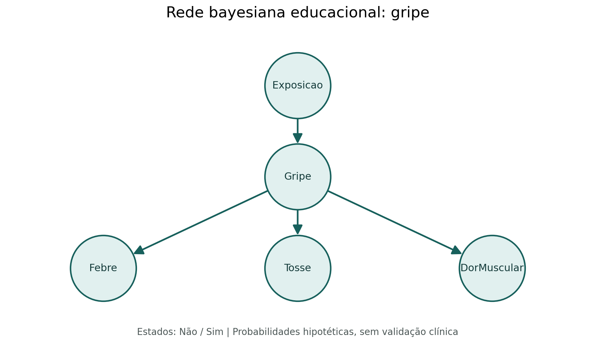

Inteligência Artificial · Lista 2 · Questão 8
Gripe em uma
rede bayesiana
Atualização da probabilidade de gripe a partir de exposição recente e sintomas observados.
Python e pgmpy: modelo discreto, inferência exata e demonstração pelo terminal.
Modelo educacional com probabilidades hipotéticas.
Sem validação clínica ou finalidade de diagnóstico real.
2026.2 · Professor Evandro Costa
Modelo
Cinco variáveis, quatro dependências

Todas as variáveis têm os estados Não e Sim.
A exposição influencia a gripe; a gripe influencia os três sintomas.
Febre, tosse e dor muscular são independentes entre si dado o estado de gripe.
Essa independência é uma simplificação e pode omitir relações clínicas relevantes.
Uma variável não informada é desconhecida. Informar Não significa observar sua ausência.
Parâmetros
CPTs e hipóteses
P(Exposicao=Sim) = 0,20; P(Exposicao=Não) = 0,80.
| Variável X | Pai | P(X=Sim | pai=Não) | P(X=Sim | pai=Sim) |
|---|---|---|---|
| Gripe | Exposicao | 0,05 | 0,30 |
| Febre | Gripe | 0,15 | 0,85 |
| Tosse | Gripe | 0,35 | 0,80 |
| DorMuscular | Gripe | 0,20 | 0,75 |
Em cada coluna, P(X=Não | pai) = 1 − P(X=Sim | pai). As CPTs completas estão no relatório e no BIF.
Valores hipotéticos do enunciado. Não foram estimados com casos da questão 7 ou dados clínicos.
Inferência exata · VariableElimination
Atualização com novas evidências
| Evidências acumuladas | P(Gripe=Não) | P(Gripe=Sim) |
|---|---|---|
| Nenhuma | 90,000000% | 10,000000% |
| Febre=Sim | 61,363636% | 38,636364% |
| + Tosse=Sim | 40,997831% | 59,002169% |
| + DorMuscular=Sim | 15,632754% | 84,367246% |
Os sintomas presentes favorecem gripe nas CPTs adotadas. A atualização mantém incerteza sobre os dois estados.
python rede_bayesiana.py --demo
python rede_bayesiana.py --evidencias "Febre=Sim,Tosse=Sim"
Resultados calculados pelo sistema; percentuais arredondados a seis casas decimais.
Resultados e limitações
Evidências negativas e exposição
| Cenário | P(Gripe=Sim) |
|---|---|
| Três sintomas ausentes | 0,188182% |
| Somente exposição presente / ausente | 30,000000% / 5,000000% |
| Três sintomas presentes e exposição presente | 95,416277% |
| Três sintomas presentes e exposição ausente | 71,881607% |
As posteriores dependem das CPTs hipotéticas e da independência condicional dos sintomas. Não houve avaliação com casos clínicos.
Uma versão futura poderia estimar CPTs com dados confiáveis e revisar as dependências com especialistas.
Fundamentação e detalhes: relatório técnico · Ankan e Textor (2024). A apresentação funciona sem acessar esses links externos.